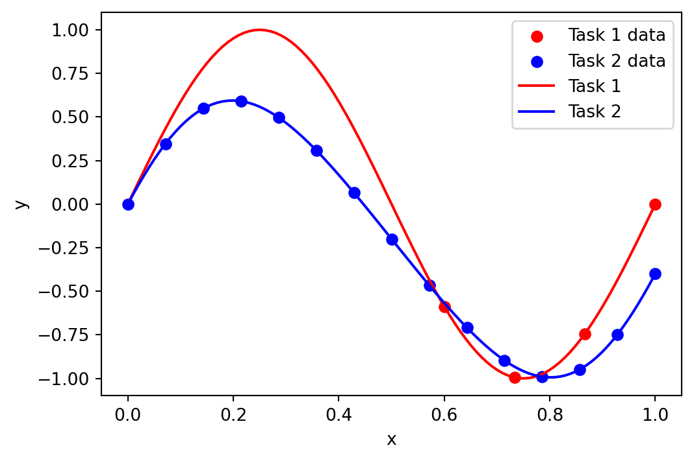
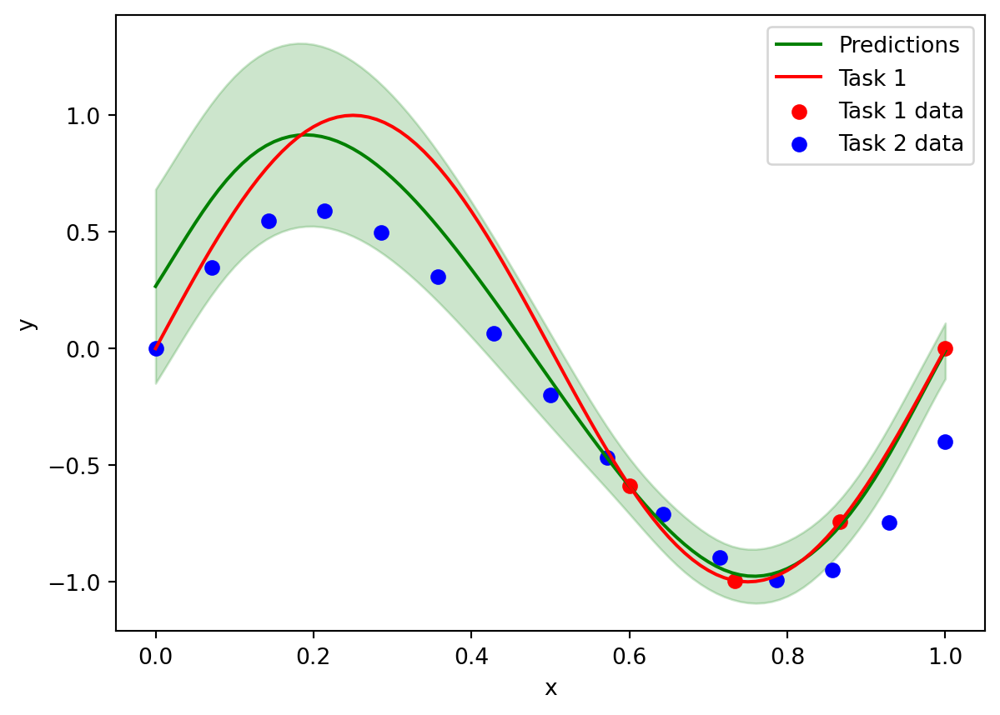
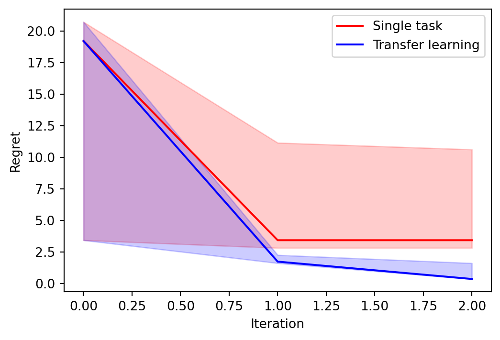

import os
import numpy as np
import pandas as pd
from tqdm import tqdm
import bofire.strategies.api as strategies
import bofire.surrogates.api as surrogates
from bofire.benchmarks.api import Ackley, Branin
from bofire.data_models.acquisition_functions.api import qLogEI
from bofire.data_models.domain.api import Domain, Inputs, Outputs
from bofire.data_models.features.api import ContinuousInput, ContinuousOutput, TaskInput
from bofire.data_models.objectives.api import MaximizeObjective
from bofire.data_models.strategies.api import SoboStrategy
from bofire.data_models.surrogates.api import (
BotorchSurrogates,
MultiTaskGPSurrogate,
SingleTaskGPSurrogate,
)import matplotlib.pyplot as pltIn this notebook we show how to use BoFire for the purposes of transfer learning Bayesian optimization. In particular, we assume we have a task \(f_2\) with data that is relevant to the optimization of our current task \(f_1\). The procedure is simple, we fit a MultiTask GP to both data-sets, however only carry out the BO on \(f_1\), i.e., we optimize the acquisition functions on on the task \(f_1\).
We build a small data-set using the target task:
\[ f_1(x) = \sin(2 \pi x) \]
And we will have data the second related task:
\[ f_2 = 0.9 \sin(2 \pi x) + 0.2 \cos(3 \pi x) - 0.2 \]
We begin by defining the functions, generating some data, and plotting it. We generate 15 data-points for Task 2 and just 4 data-points for Task 1, all the data-points in Task 1 will be in a restricted area of the space.
def task_1_f(x):
return np.sin(x * 2 * np.pi)
def task_2_f(x):
return 0.9 * np.sin(x * 2 * np.pi) - 0.2 + 0.2 * np.cos(x * 3 * np.pi)
x = np.linspace(0, 1, 101)
# generate lots of low fidelity data and a few high fidelity data
task_1_x = np.linspace(0.6, 1, 4)
task_1_y = task_1_f(task_1_x)
task_2_x = np.linspace(0, 1, 15)
task_2_y = task_2_f(task_2_x)
# set the data in the pandas format
experiments = pd.DataFrame(
{
"x": np.concatenate([task_1_x, task_2_x]),
"y": np.concatenate([task_1_y, task_2_y]),
"task": ["task_1"] * len(task_1_x) + ["task_2"] * len(task_2_x),
},
)
plt.figure(figsize=(6, 4))
plt.scatter(task_1_x, task_1_y, label="Task 1 data", color="red")
plt.scatter(task_2_x, task_2_y, label="Task 2 data", color="blue")
plt.plot(x, task_1_f(x), label="Task 1", color="red")
plt.plot(x, task_2_f(x), label="Task 2", color="blue")
plt.xlabel("x")
plt.ylabel("y")
plt.legend()
Inference
At first we will show to do inference with the model and see make predictions using multiple data-sets.
We first set-up the model according to BoFire’s API, by defining the set of input and output features and the corresponding bounds, and create a surrogate data model:
- To define the task we choose the
TaskInputfeature, everything else follows standard BoFire procedure.
# set-up the task model with allowed variable as ["True"] for the target task and ["False"] for the other task
task_input = TaskInput(key="task", categories=["task_1", "task_2"])
# define the input features
input_features = [ContinuousInput(key="x", bounds=(0, 1)), task_input]
objective = MaximizeObjective(w=1)
output_features = [ContinuousOutput(key="y", objective=objective)]
inputs = Inputs(features=input_features)
outputs = Outputs(features=output_features)
surrogate_data = MultiTaskGPSurrogate(inputs=inputs, outputs=outputs)We map from the surrogate data into the surrogate model and fit the data.
surrogate = surrogates.map(surrogate_data)
surrogate.fit(experiments)/opt/hostedtoolcache/Python/3.12.12/x64/lib/python3.12/site-packages/linear_operator/utils/interpolation.py:71: UserWarning:
torch.sparse.SparseTensor(indices, values, shape, *, device=) is deprecated. Please use torch.sparse_coo_tensor(indices, values, shape, dtype=, device=). (Triggered internally at /pytorch/torch/csrc/utils/tensor_new.cpp:654.)
Plot to see how we are able to predict outside of the region where there is data for Task 1, since we can use the data from Task 2 and the learnt correlations:
# predict the high fidelity data
x_predict = np.linspace(0, 1, 101)
y_predict = surrogate.predict(
pd.DataFrame({"x": x_predict, "task": ["task_1"] * len(x_predict)}),
)
# plot data and predictions
plt.plot(x_predict, y_predict["y_pred"], label="Predictions", color="green")
plt.fill_between(
x_predict,
y_predict["y_pred"] - 2 * y_predict["y_sd"],
y_predict["y_pred"] + 2 * y_predict["y_sd"],
color="green",
alpha=0.2,
)
# plot the high fidelity function
plt.plot(x, task_1_f(x), label="Task 1", color="red")
# plot the data too
plt.scatter(
experiments[experiments["task"] == "task_1"]["x"],
experiments[experiments["task"] == "task_1"]["y"],
label="Task 1 data",
color="red",
)
plt.scatter(
experiments[experiments["task"] == "task_2"]["x"],
experiments[experiments["task"] == "task_2"]["y"],
label="Task 2 data",
color="blue",
)
plt.xlabel("x")
plt.ylabel("y")
plt.legend()
Transfer Learning Bayesian Optimisation
Let us now integrate this into BoFire’s SOBO strategy. This can be done by following the standard BoFire syntax with a small modification.
- For
TaskInputwe must set the variableallowedas a list, with each element in the list corresponding to one of thecategoriessuch that all auxiliary tasks haveFalseand target task hasTrue. For example, we havecategories = ["task_1, task_2"]and the goal of our optimization is to optimizetask_1therefore we setallowed = [True, False]:
input_features = [
ContinuousInput(key="x", bounds=(0, 1)),
TaskInput(key="task", categories=["task_1", "task_2"], allowed=[True, False]),
]
objective = MaximizeObjective(w=1)
output_features = [ContinuousOutput(key="y", objective=objective)]
inputs = Inputs(features=input_features)
outputs = Outputs(features=output_features)
surrogate_data = MultiTaskGPSurrogate(inputs=inputs, outputs=outputs)
surrogate_specs = BotorchSurrogates(surrogates=[surrogate_data])
# define the acquisition function
acquisition = qLogEI()
sobo_strategy_data_model = SoboStrategy(
domain=Domain(
inputs=inputs,
outputs=outputs,
),
acquisition_function=acquisition,
surrogate_specs=surrogate_specs,
)
sobo_strategy = strategies.map(sobo_strategy_data_model)
sobo_strategy.tell(experiments)We can now generate experimental candidates:
candidates = sobo_strategy.ask(3)
candidates/opt/hostedtoolcache/Python/3.12.12/x64/lib/python3.12/site-packages/botorch/optim/optimize.py:789: RuntimeWarning:
Optimization failed in `gen_candidates_scipy` with the following warning(s):
[NumericalWarning('A not p.d., added jitter of 1.0e-08 to the diagonal'), OptimizationWarning('Optimization failed within `scipy.optimize.minimize` with status 2 and message ABNORMAL: .')]
Trying again with a new set of initial conditions.
| x | task | y_pred | y_sd | y_des | |
|---|---|---|---|---|---|
| 0 | 0.167564 | task_1 | 0.907340 | 0.198497 | 0.907340 |
| 1 | 0.214402 | task_1 | 0.905685 | 0.192966 | 0.905685 |
| 2 | 0.189183 | task_1 | 0.916241 | 0.196196 | 0.916241 |
If we instead wanted to optimize task_2 instead of task_1, we simply change allowed = [False, True]:
input_features = [
ContinuousInput(key="x", bounds=(0, 1)),
TaskInput(key="task", categories=["task_1", "task_2"], allowed=[False, True]),
]
objective = MaximizeObjective(w=1)
output_features = [ContinuousOutput(key="y", objective=objective)]
inputs = Inputs(features=input_features)
outputs = Outputs(features=output_features)
surrogate_data = MultiTaskGPSurrogate(inputs=inputs, outputs=outputs)
surrogate_specs = BotorchSurrogates(surrogates=[surrogate_data])
# define the acquisition function
acquisition = qLogEI()
sobo_strategy_data_model = SoboStrategy(
domain=Domain(
inputs=inputs,
outputs=outputs,
),
acquisition_function=acquisition,
surrogate_specs=surrogate_specs,
)
sobo_strategy = strategies.map(sobo_strategy_data_model)
sobo_strategy.tell(experiments)We now obtain candidates for task_2:
candidate = sobo_strategy.ask(1)
candidate| x | task | y_pred | y_sd | y_des | |
|---|---|---|---|---|---|
| 0 | 0.197146 | task_2 | 0.594692 | 0.026344 | 0.594692 |
Let us now run a Bayesian optimization loop on the Branin benchmark to show the usefulness of transfer learning Bayesian optimization in a practical setting. We create a small data-set composed of the Branin benchmark itself, and a large one composed of the Branin function with a small amount of bias added by summing the Branin and Ackley functions.
We begin by defining a function that creates random initial data-sets, and create as many data-sets as the number of runs we want to average over:
benchmark = Branin()
bias = Ackley()
def create_data_set():
# choose the initial data-sets
low_fidelity_x = benchmark.domain.inputs.sample(25)
high_fidelity_x = benchmark.domain.inputs.sample(4)
# create the observations
high_fidelity_data = benchmark.f(high_fidelity_x, return_complete=True)
low_fidelity_bias = bias.f(low_fidelity_x, return_complete=True)
low_fidelity_data = benchmark.f(low_fidelity_x, return_complete=True)
low_fidelity_data["y"] = low_fidelity_data["y"] + 0.15 * low_fidelity_bias["y"]
# create a joint data-set, with the task variable
high_fidelity_data["task"] = "task_1"
low_fidelity_data["task"] = "task_2"
experiments_joint = pd.concat([low_fidelity_data, high_fidelity_data])
return high_fidelity_data, experiments_jointsingle_task_all_regrets = []
SMOKE_TEST = os.environ.get("SMOKE_TEST")
if SMOKE_TEST:
num_runs = 5
num_iters = 2
verbose = False
else:
num_runs = 10
num_iters = 10
verbose = True
# create the initial data-sets for each run
high_fidelity_datasets = []
experiments_joint_datasets = []
for _ in range(num_runs):
high_fidelity_data, experiments_joint = create_data_set()
high_fidelity_datasets.append(high_fidelity_data)
experiments_joint_datasets.append(experiments_joint)Let us now run a Bayesian optimization loop only using the high-fidelity data:
for run in range(num_runs):
high_fidelity_data = high_fidelity_datasets[run]
inputs = benchmark.domain.inputs
outputs = benchmark.domain.outputs
surrogate_data = SingleTaskGPSurrogate(inputs=inputs, outputs=outputs)
surrogate_specs = BotorchSurrogates(surrogates=[surrogate_data])
acquisition = qLogEI()
sobo_strategy_data_model = SoboStrategy(
domain=Domain(
inputs=inputs,
outputs=outputs,
),
acquisition_function=acquisition,
surrogate_specs=surrogate_specs,
)
sobo_strategy = strategies.map(sobo_strategy_data_model)
dataset = high_fidelity_data.drop(columns=["task"])
sobo_strategy.tell(dataset)
regrets_single_task = []
init_regret = (
sobo_strategy.experiments["y"][sobo_strategy.experiments["y"].argmin()]
- benchmark.get_optima()["y"][0].item()
)
regrets_single_task.append(init_regret)
pbar = tqdm(range(num_iters), desc="Optimizing")
for _iter in pbar:
candidate = sobo_strategy.ask(1)
y = benchmark.f(candidate, return_complete=True)
sobo_strategy.tell(y)
regret = (
sobo_strategy.experiments["y"][sobo_strategy.experiments["y"].argmin()]
- benchmark.get_optima()["y"][0].item()
)
regrets_single_task.append(regret)
pbar.set_postfix({"Regret": f"{regret:.4f}"})
single_task_all_regrets.append(regrets_single_task)Optimizing: 0%| | 0/2 [00:00<?, ?it/s]Optimizing: 0%| | 0/2 [00:00<?, ?it/s, Regret=9.0021]Optimizing: 50%|█████ | 1/2 [00:00<00:00, 1.28it/s, Regret=9.0021]Optimizing: 50%|█████ | 1/2 [00:01<00:00, 1.28it/s, Regret=9.0021]Optimizing: 100%|██████████| 2/2 [00:01<00:00, 1.21it/s, Regret=9.0021]Optimizing: 100%|██████████| 2/2 [00:01<00:00, 1.22it/s, Regret=9.0021]
Optimizing: 0%| | 0/2 [00:00<?, ?it/s]Optimizing: 0%| | 0/2 [00:00<?, ?it/s, Regret=6.9546]Optimizing: 50%|█████ | 1/2 [00:00<00:00, 2.35it/s, Regret=6.9546]Optimizing: 50%|█████ | 1/2 [00:00<00:00, 2.35it/s, Regret=6.1253]Optimizing: 100%|██████████| 2/2 [00:00<00:00, 1.96it/s, Regret=6.1253]Optimizing: 100%|██████████| 2/2 [00:00<00:00, 2.01it/s, Regret=6.1253]
Optimizing: 0%| | 0/2 [00:00<?, ?it/s]Optimizing: 0%| | 0/2 [00:00<?, ?it/s, Regret=1.6283]Optimizing: 50%|█████ | 1/2 [00:00<00:00, 1.45it/s, Regret=1.6283]Optimizing: 50%|█████ | 1/2 [00:01<00:00, 1.45it/s, Regret=1.6283]Optimizing: 100%|██████████| 2/2 [00:01<00:00, 1.49it/s, Regret=1.6283]Optimizing: 100%|██████████| 2/2 [00:01<00:00, 1.49it/s, Regret=1.6283]
Optimizing: 0%| | 0/2 [00:00<?, ?it/s]Optimizing: 0%| | 0/2 [00:00<?, ?it/s, Regret=1.0507]Optimizing: 50%|█████ | 1/2 [00:00<00:00, 2.16it/s, Regret=1.0507]Optimizing: 50%|█████ | 1/2 [00:01<00:00, 2.16it/s, Regret=1.0249]Optimizing: 100%|██████████| 2/2 [00:01<00:00, 1.96it/s, Regret=1.0249]Optimizing: 100%|██████████| 2/2 [00:01<00:00, 1.99it/s, Regret=1.0249]
Optimizing: 0%| | 0/2 [00:00<?, ?it/s]Optimizing: 0%| | 0/2 [00:01<?, ?it/s, Regret=4.1368]Optimizing: 50%|█████ | 1/2 [00:01<00:01, 1.05s/it, Regret=4.1368]Optimizing: 50%|█████ | 1/2 [00:01<00:01, 1.05s/it, Regret=4.1368]Optimizing: 100%|██████████| 2/2 [00:01<00:00, 1.46it/s, Regret=4.1368]Optimizing: 100%|██████████| 2/2 [00:01<00:00, 1.35it/s, Regret=4.1368]We now repeat the experiment but using transfer learning BO:
multitask_all_regrets = []
for run in range(num_runs):
experiments_joint = experiments_joint_datasets[run]
input_features = benchmark.domain.inputs.features + [
TaskInput(key="task", categories=["task_1", "task_2"], allowed=[True, False]),
]
inputs = Inputs(features=input_features)
outputs = benchmark.domain.outputs
surrogate_data = MultiTaskGPSurrogate(inputs=inputs, outputs=outputs)
surrogate_specs = BotorchSurrogates(surrogates=[surrogate_data])
acquisition = qLogEI()
sobo_strategy_data_model = SoboStrategy(
domain=Domain(
inputs=inputs,
outputs=outputs,
),
acquisition_function=acquisition,
surrogate_specs=surrogate_specs,
)
sobo_strategy = strategies.map(sobo_strategy_data_model)
dataset = experiments_joint.copy()
sobo_strategy.tell(dataset)
regrets_transfer_learning = []
# obtain experiments at the highest fidelity
experiments = sobo_strategy.experiments[
sobo_strategy.experiments["task"] == "task_1"
]["y"]
init_regret = (
experiments[experiments.argmin()] - benchmark.get_optima()["y"][0].item()
)
regrets_transfer_learning.append(init_regret)
pbar = tqdm(range(num_iters), desc="Optimizing")
for _iter in pbar:
candidate = sobo_strategy.ask(1)
candidate = candidate.drop(columns=["task"])
y = benchmark.f(candidate, return_complete=True)
y["task"] = "task_1"
sobo_strategy.tell(y)
experiments = sobo_strategy.experiments[
sobo_strategy.experiments["task"] == "task_1"
]["y"].reset_index(drop=True)
regret = (
experiments[experiments.argmin()] - benchmark.get_optima()["y"][0].item()
)
regrets_transfer_learning.append(regret)
pbar.set_postfix({"Regret": f"{regret:.4f}"})
multitask_all_regrets.append(regrets_transfer_learning)Optimizing: 0%| | 0/2 [00:00<?, ?it/s]Optimizing: 0%| | 0/2 [00:01<?, ?it/s, Regret=9.0021]Optimizing: 50%|█████ | 1/2 [00:01<00:01, 1.99s/it, Regret=9.0021]Optimizing: 50%|█████ | 1/2 [00:04<00:01, 1.99s/it, Regret=0.1073]Optimizing: 100%|██████████| 2/2 [00:04<00:00, 2.35s/it, Regret=0.1073]Optimizing: 100%|██████████| 2/2 [00:04<00:00, 2.30s/it, Regret=0.1073]
Optimizing: 0%| | 0/2 [00:00<?, ?it/s]Optimizing: 0%| | 0/2 [00:01<?, ?it/s, Regret=6.9546]Optimizing: 50%|█████ | 1/2 [00:01<00:01, 1.86s/it, Regret=6.9546]Optimizing: 50%|█████ | 1/2 [00:03<00:01, 1.86s/it, Regret=0.9471]Optimizing: 100%|██████████| 2/2 [00:03<00:00, 2.00s/it, Regret=0.9471]Optimizing: 100%|██████████| 2/2 [00:03<00:00, 1.98s/it, Regret=0.9471]
Optimizing: 0%| | 0/2 [00:00<?, ?it/s]Optimizing: 0%| | 0/2 [00:01<?, ?it/s, Regret=0.9334]Optimizing: 50%|█████ | 1/2 [00:01<00:01, 1.72s/it, Regret=0.9334]Optimizing: 50%|█████ | 1/2 [00:03<00:01, 1.72s/it, Regret=0.9334]Optimizing: 100%|██████████| 2/2 [00:03<00:00, 1.83s/it, Regret=0.9334]Optimizing: 100%|██████████| 2/2 [00:03<00:00, 1.82s/it, Regret=0.9334]
Optimizing: 0%| | 0/2 [00:00<?, ?it/s]Optimizing: 0%| | 0/2 [00:02<?, ?it/s, Regret=1.0507]Optimizing: 50%|█████ | 1/2 [00:02<00:02, 2.12s/it, Regret=1.0507]Optimizing: 50%|█████ | 1/2 [00:04<00:02, 2.12s/it, Regret=1.0507]Optimizing: 100%|██████████| 2/2 [00:04<00:00, 2.07s/it, Regret=1.0507]Optimizing: 100%|██████████| 2/2 [00:04<00:00, 2.08s/it, Regret=1.0507]
Optimizing: 0%| | 0/2 [00:00<?, ?it/s]Optimizing: 0%| | 0/2 [00:03<?, ?it/s, Regret=4.9701]Optimizing: 50%|█████ | 1/2 [00:03<00:03, 3.14s/it, Regret=4.9701]Optimizing: 50%|█████ | 1/2 [00:06<00:03, 3.14s/it, Regret=2.4583]Optimizing: 100%|██████████| 2/2 [00:06<00:00, 2.99s/it, Regret=2.4583]Optimizing: 100%|██████████| 2/2 [00:06<00:00, 3.01s/it, Regret=2.4583]We now plot the quantiles and median simple regret against iteration:
# plot the results
plt.figure(figsize=(6, 4))
regrets_single_task_median = np.median(np.array(single_task_all_regrets), axis=0)
regrets_transfer_learning_median = np.median(np.array(multitask_all_regrets), axis=0)
# get the 25 and 75 percentiles
regrets_single_task_upper_quantile = np.quantile(
np.array(single_task_all_regrets),
0.75,
axis=0,
)
regrets_single_task_lower_quantile = np.quantile(
np.array(single_task_all_regrets),
0.25,
axis=0,
)
regrets_transfer_learning_upper_quantile = np.quantile(
np.array(multitask_all_regrets),
0.75,
axis=0,
)
regrets_transfer_learning_lower_quantile = np.quantile(
np.array(multitask_all_regrets),
0.25,
axis=0,
)
plt.plot(regrets_single_task_median, label="Single task", color="red")
plt.plot(regrets_transfer_learning_median, label="Transfer learning", color="blue")
plt.fill_between(
np.arange(num_iters + 1),
regrets_single_task_upper_quantile,
regrets_single_task_lower_quantile,
color="red",
alpha=0.2,
)
plt.fill_between(
np.arange(num_iters + 1),
regrets_transfer_learning_upper_quantile,
regrets_transfer_learning_lower_quantile,
color="blue",
alpha=0.2,
)
plt.xlabel("Iteration")
plt.ylabel("Regret")
plt.legend()
plt.show()
We can see that using transfer learning leads to significant improvement.